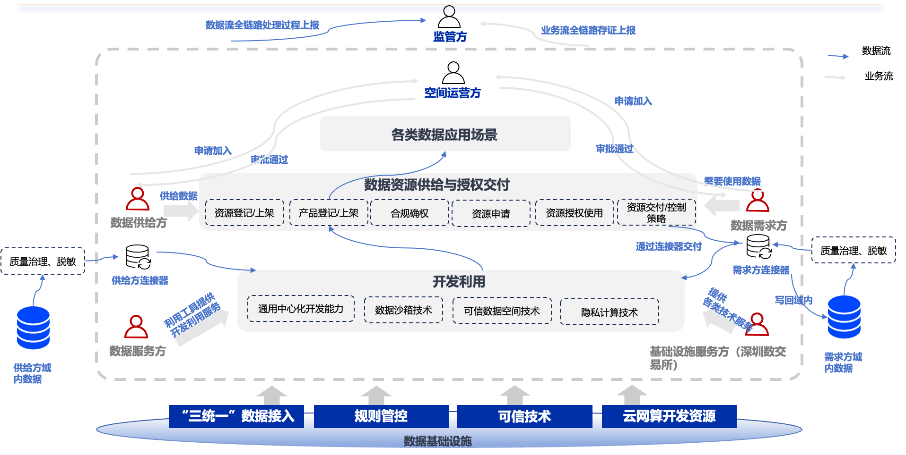

可信数据空间的发展历程
从理论概念到“数据要素×”的商业落地实践
核心定义
可信数据空间（Trusted Data Space）是基于共识规则，由互联互通的数字化基础设施构建的，能够实现数据资源在不同主体间安全、可信、可控流通与共享的数据流通环境。它是支撑构建全国一体化数据市场的重要载体，也是实现数据要素价值共创的应用生态。
🇪🇺 欧盟：规则与标准的先行者
- 起源： 2015-2016年，德国工业4.0背景下提出，成立IDSA（国际数据空间协会）。
- 发展： 2019年启动 Gaia-X 计划，旨在建立欧洲联邦云数据基础设施，强调数字主权。
- 关键成果： 发布 IDS 参考架构模型（IDS-RAM），定义了连接器（Connector）、身份认证中心等核心组件。
- 现状： 推动 Catena-X（汽车网络）等行业空间落地，形成 Dataspace Protocol (DSP) 协议标准。
🇨🇳 中国：场景驱动与要素化实践
- 起步： 2021年前后引入概念，与“数据要素”战略深度结合。
- 爆发： 2024年印发《可信数据空间发展行动计划（2024—2028年）》，成立可信数据空间发展联盟（TDSA）。
- 特色： 强调“数据要素×”三年行动计划，注重行业应用试点（如北京、上海、深圳数据交易所探索）。
- 2025现状： 迈入实践落地阶段。首批63个国家级试点项目启动，涵盖金融、制造、医疗等领域，强调“信任为基础、价值为激励”。
技术体系总览
四大支柱构建“可信、可控、可证”的流通环境，解决数据“不敢享、不愿享、不会享”的难题。
身份管理
解决运行于可信数据空间中的各类主体身份的问题，包括主体身份、数据身份、接入点（连接器）身份的可信认证等问题。
互联互通
重点解决身份互通、数据互通、语义互通问题，打破数据孤岛，实现不同空间之间的对话。
可信管控技术
重点保障数据流通利用全过程的可管可控，是整个可信数据空间体系的核心体系。
存证溯源技术
重点解决数据流通利用过程中的关键事件、重点行为的存证和溯源，确保全链路可追溯。
1. 身份管控体系 (Identity Management)
确保参与方身份真实有效，是建立信任的第一道关卡。
技术演变与原理
| 发展阶段 | 核心特征与逻辑 | 关键技术与协议 | 优缺点与现状 |
|---|---|---|---|
|
第一阶段
中心化身份
(孤岛时代)
|
边界防护
基于边界，默认信任防火墙内部流量。
“一把钥匙开一把锁”
|
|
● 缺点：信息孤岛严重，账号维护成本高，离职未注销风险大。
● 现状：传统企业内网依然大量存在。
|
|
第二阶段
联盟化身份
(云与SSO时代)
|
互联互通
基于互信，应用系统信任 IdP 颁发的令牌。
“一本护照通关多国”
|
|
● 优点：用户体验好(SSO)，管理效率提升。
● 缺点：一旦IdP被攻破所有系统遭殃；授权粒度较粗。
● 现状：当前互联网和企业应用的主流模式。
|
|
第三阶段
零信任身份
(智能化时代)
|
动态风控
基于上下文，永不信任，持续验证。只看行为是否异常。
“每次访问都需安检”
|
|
● 优点：安全性极高，防范凭证窃取和内部威胁。
● 缺点：建设成本高，可能会牺牲一点用户体验。
● 现状：成熟企业正在大力建设的阶段。
|
|
第四阶段
去中心化身份
(Web3时代)
|
用户主权
基于密码学证明，不依赖中心机构，数据确权。
“数据装进用户自己的钱包”
|
|
● 优点：彻底解决隐私泄露问题，用户完全掌控数据。
● 缺点：技术门槛高，标准尚在完善，普及度低。
● 现状：处于探索和早期试点阶段。
|
实践案例
欧盟 Gaia-X： 使用“Trust Anchors”和可验证凭证（VC）来验证云服务商是否符合GDPR合规要求。
中国某能源数据空间： 采用分布式数字身份（DID）为电厂、电网、用户分配身份，确保数据上传者的身份不可抵赖，且无需中心化数据库存储所有企业隐私。
2. 互联互通体系 (Interconnectivity)
打破数据孤岛，实现不同系统、不同空间之间的对话。
可信数据空间资源交互技术体系
互联互通的三个层面
- 协议互通： 大家都说同一种语言（如 HTTPs + Dataspace Protocol），规定怎么握手、怎么传目录。
- 身份互认： 你的通行证我也认（基于信任锚点的互信）。
- 语义互通： 大家都懂“温度”指的是摄氏度还是华氏度（使用词汇表/本体库）。
核心组件：连接器 (Connector)
原理： 连接器是数据空间的“网关”或“路由器”。企业不直接把数据发给对方，而是通过连接器。
它负责：
1. 验证对方身份。
2. 检查对方是否有“合约”（使用权限）。
3. 记录日志。
4. 执行数据传输。
实践案例
Catena-X (汽车联盟)： 宝马、大众等车企通过 Eclipse Dataspace Components (EDC) 连接器，在不将数据汇聚到一个大池子的情况下，互相查询零部件的碳足迹数据。
3. 可信管控技术 (Trusted Control)
核心难题：如何让数据“可用不可见”或“可见不可存”。
可信管控技术定义了一套从策略制定到技术强制执行的体系，确保数据只能按照约定的方式（时间、次数、用途）被处理。
A. 使用控制 (Usage Control)
基本原理： 给数据贴上“封条”和“说明书”（ODRL策略）。如“只能在2025年前读取3次”。连接器在传输前、使用中拦截检查。
可见性： 数据内容可见（通常），但行为受控。
管理模式： 分布式执行（在数据接收端通过受控环境执行）。
效率/成本： 高效率 / 低成本。
适用场景： 版权保护、普通商业数据交换。
B. 联邦学习 (Federated Learning)
基本原理： “数据不动模型动”。算法模型下发到各家医院/银行本地训练，只把更新的参数（梯度）传回中央聚合，原始数据不出域。
可见性： 原始数据不可见。
管理模式： 逻辑集中协调，数据分布式存储。
效率/成本： 中等效率 / 中等成本（需通信迭代）。
适用场景： 医疗联合建模、反洗钱风控（数据量大，只需模型）。
C. 多方安全计算 (MPC)
基本原理： “数据拆碎了算”。将数据通过密码学切片（Secret Sharing），多方各拿一片进行计算，谁都不知道原始数据，最后拼出结果。
可见性： 原始数据绝对不可见（理论安全）。
管理模式： 分布式协同。
效率/成本： 低效率 / 高计算成本（通信开销大）。
适用场景： 高敏感数据的简单统计（如“百万富翁问题”、薪资调查）。
D. 可信执行环境 (TEE/沙箱)
基本原理： “黑盒子里算”。利用CPU硬件（如Intel SGX, ARM TrustZone）构建一个加密的内存区域。操作系统和管理员都看不了里面的数据。
可见性： 硬件级不可见。
管理模式： 集中式或分布式节点。
效率/成本： 接近原生的高效率 / 硬件依赖成本。
适用场景： 通用计算任务、复杂的联合分析。
4. 存证溯源技术 (Provenance & Traceability)
确权、追责与审计的基础。
存什么？怎么存？
- 存证内容： 数据目录元数据、合约（Usage Policy）、每一次的数据传输日志（谁、何时、传了什么）、操作记录。注意：通常不存原始数据本身。
- 技术体系：
- 区块链 (Blockchain)： 利用其不可篡改性，存储合约哈希和关键日志哈希。
- 智能合约： 自动记录交易结算。
- 数字水印： 在数据（如图片、文档）中嵌入隐形标记，一旦泄露可追溯源头。
实践案例： 某消费品质量可信追溯空间。利用区块链记录从工厂生产、物流运输到商场销售的全链路数据指纹。消费者扫码即可验证商品真伪，且数据来源不可篡改。
运营与规则体系
技术是底座，运营是灵魂。如何构建可持续的商业闭环？
角色分工与职责
数据持有方 (Provider)
拥有数据资源，定义使用策略，通过数据共享获取收益。
数据使用方 (Consumer)
创造应用场景，支付费用或提供服务，挖掘数据价值。
空间运营方 (Operator)
搭建基础设施，制定规则，进行身份认证与审计，通常是第三方公立机构或行业龙头。
利益分配与规则设定
准入与退出机制
必须通过身份认证（KYC）和安全能力评估才能加入。违规者（如私存数据）将被吊销凭证并公示。
利益分配模式
直接交易： 数据按次/按量计费，银货两讫。
增值分成： 使用方基于数据开发出AI模型或SaaS服务，收益按比例（如3:7）回馈给数据提供方。
积分置换： 联盟链内部积分，贡献数据得积分，消耗积分查数据（适合科研/公益）。
行业应用解决方案
基于“2025年空间试点分析”的场景设计
医疗卫生：跨机构临床科研协作空间
解决问题 (目标)
- 业务： 解决单一医院样本少、病种单一，无法训练高精度AI模型的问题。
- 技术： 医院数据绝不出院，保护患者隐私。
- 数据： 打通电子病历(EMR)、影像(PACS)等多模态数据。
闭环与技术承载
技术选型： 联邦学习 (FL) + TEE。
闭环链路： 药企发布需求 -> 空间分发任务 -> 医院节点本地训练 -> 返回梯度 -> 聚合模型 -> 药企付费 -> 智能合约自动分润给医院。
民生诉求：城市基层治理数据空间
解决问题 (目标)
- 业务： “12345”热线、网格员、物业数据分散，基层治理“看得见管不着”。
- 技术： 跨部门（城管、交通、社区）数据实时融合与隐私脱敏。
闭环与技术承载
技术选型： 互联互通连接器 + 数据沙箱。
闭环链路： 居民投诉 -> 空间汇聚多方数据（如噪音监测、交通流量） -> 智能分析归因 -> 派单给职能部门 -> 处置反馈上链存证。
金融领域：中小微企业供应链金融空间
解决问题 (目标)
- 业务： 中小企业无抵押、融资难；银行不敢贷。
- 数据： 整合核心企业订单、物流仓储、税务发票数据。
闭环与技术承载
技术选型： 多方安全计算 (MPC) + 区块链存证。
闭环链路： 企业申请贷款 -> 银行发起查询请求 -> 空间联合计算企业经营评分（不泄露具体订单金额，只出评分结果） -> 银行放款 -> 贷后实时监控。
深数空间逻辑体系与实践
基于“深圳数据流通利用基础设施”的标准化空间模板与运营范式
深数空间逻辑架构图

深数空间逻辑体系架构
1. 角色与职责体系
空间运营方 (群主)
核心组织者。负责“建群”、制定群规、审核成员准入、管理空间运行秩序。
监管方
负责业务全链路和数据流全链路的合规监管，接收认证上报。
基础设施服务方
提供底层“三统一”接入能力、算力资源及基础可信技术支撑（如深圳数据交易所）。
数据供给/需求方
供给方负责数据治理、登记上架；需求方发起申请、合规使用数据。
数据服务方
提供数据治理、开发工具、算法模型等增值服务。
2. 核心运作逻辑与设计思路
组织运作：“群组化”管理模式
采用类似“拉群”的方式进行运作。
● 群主： 空间运营方，负责发起空间、邀请成员、制定群规（管理制度）。
● 群成员： 供给方、需求方、服务方等，在规则框架下进行互动。
基础设施：“标准化”模板生成
整个运作构建在深圳数据流通利用基础设施之上。
● 深数空间不仅仅是一个单一平台，而是一个具备“标准化”能力的工厂/模板。
● 在构建具体的行业空间（如医疗空间、交通空间）时，通过调用该模板，快速生成对应的空间实例，实现快速部署与互联。
开发利用：多元化模式支撑
针对不同敏感等级的数据，提供差异化的开发利用模式：
● 通用中心化开发： 适合低敏感、公开数据。
● 数据沙箱： “数据可用不可见”，适合中等敏感度数据。
● 隐私计算： 适合高敏感数据，原始数据不出域。
规范体系：遵从国家统一标准
身份管理和互联互通严格遵从国家数据流通利用基础设施制定的统一规范。
● 探索并落实 身份互通、协议互通 和 语义互通，确保深数空间生成的每一个实例都能接入全国一体化网络。
存证溯源：全链路区块链存证
● 业务流存证： 审批、授权、订单等业务行为上链。
● 技术流存证： 数据传输、计算过程、销毁记录上链。
● 实现业务与技术全链路的可溯源、不可篡改，满足监管要求。